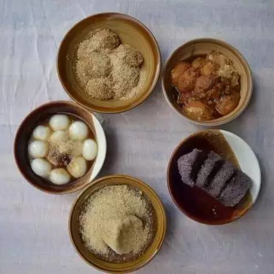

袁国栋卤肉米线
2018-8-08 12:36:48
石林袁国栋卤肉米线店位于石林县鹿阜镇东门街，由原云南著名大厨袁公国栋于七十年代...
[更多内容]
老韩、老曹（曹记）牛肉米线
2018-8-01 12:36:48
石林老韩、老曹（曹记）两家牛肉馆创立20年有余，源于传统汤锅，选用圭山青壮黄...
[更多内容]
杨氏百年蒸蒸糕
2018-8-12 12:36:48

杨氏百年蒸蒸糕是石林县一家很传统的甜品小吃店，被誉为云南名小吃。其汤圆一直都是...
[更多内容]
李氏凉鸡米线
2018-8-12 12:36:48

“李氏凉鸡米线”品牌老店现位于石林县阿诗玛南路。新分店位于石林县东门坊（戴斯大酒店...
[更多内容]
石林豆腐
2018-8-12 12:36:48
石林地区属于喀斯特地貌，地质结构多石灰岩，造成水质较硬，烧水来喝水垢多到吓人，但入口清...
[更多内容]